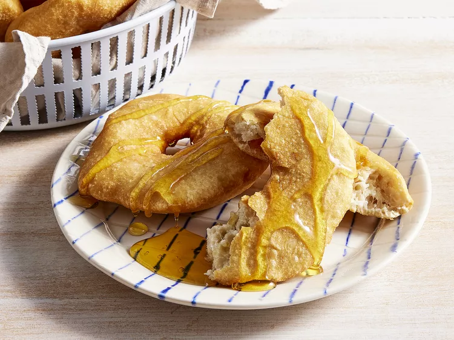

Fry Bread

This is an image of a fry bread
Ingredients
- 4 cups shortening for frying
- 4 cups all-purpose flour
- 1 tablespoon baking powder
- ½ teaspoon salt
- 1 ½ cups warm water (110 degrees F/45 degrees C)
Steps
- Heat shortening in a heavy saucepan to 350 degrees F (175 degrees C).
- Combine flour, baking powder, and salt in a large bowl.
- Stir in warm water and knead until soft but not sticky.
- Shape dough into twelve 3-inch diameter ball. Flatten into 1/2-inch-thick patties, and make a small hole in the center of each patty.
- Fry in 1-inch deep hot shortening one at a time until golden brown, 1 to 2 minutes per side. Drain on paper towels.